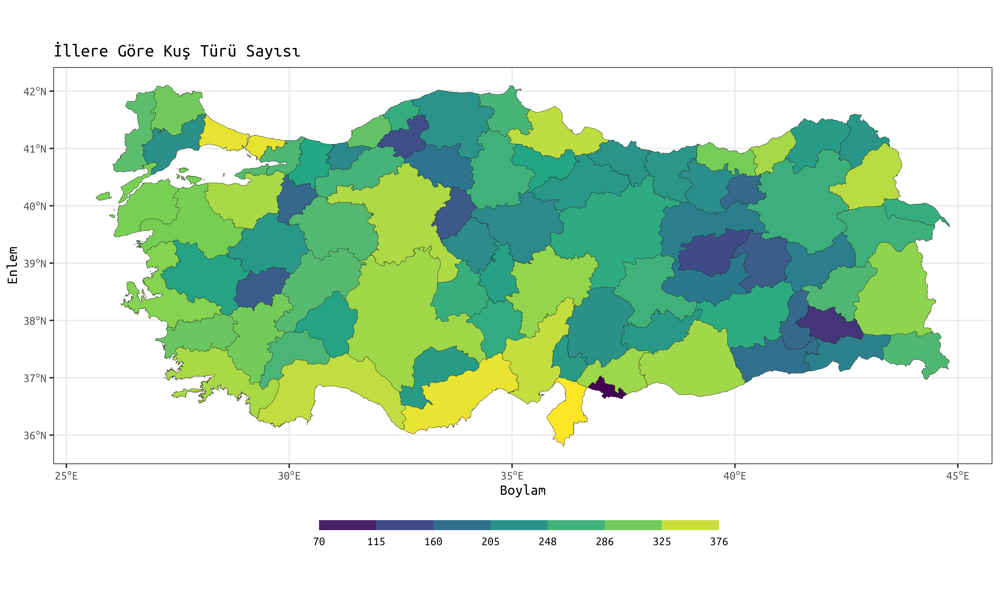
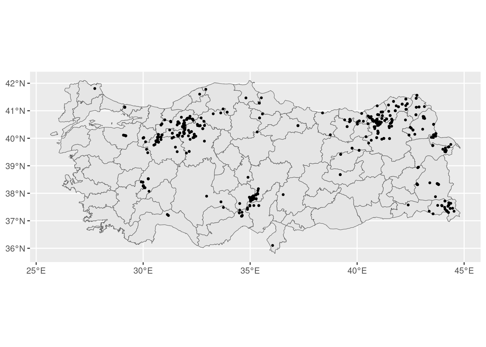
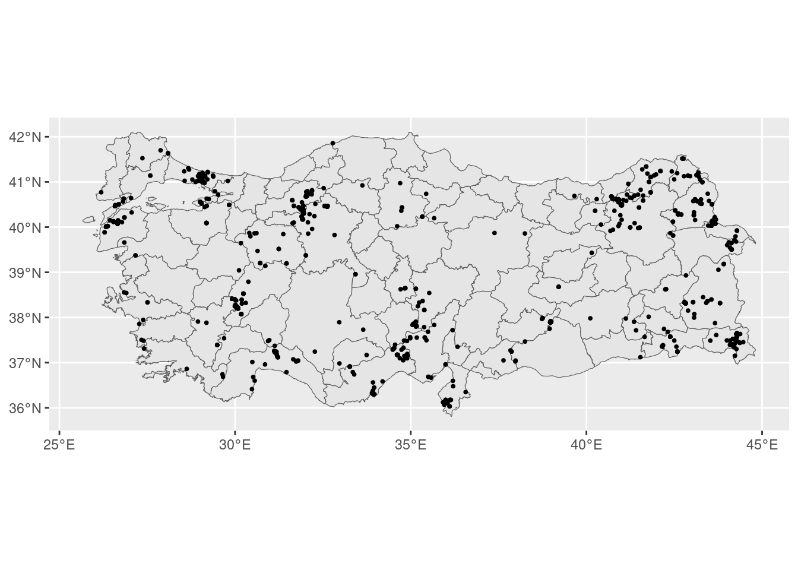
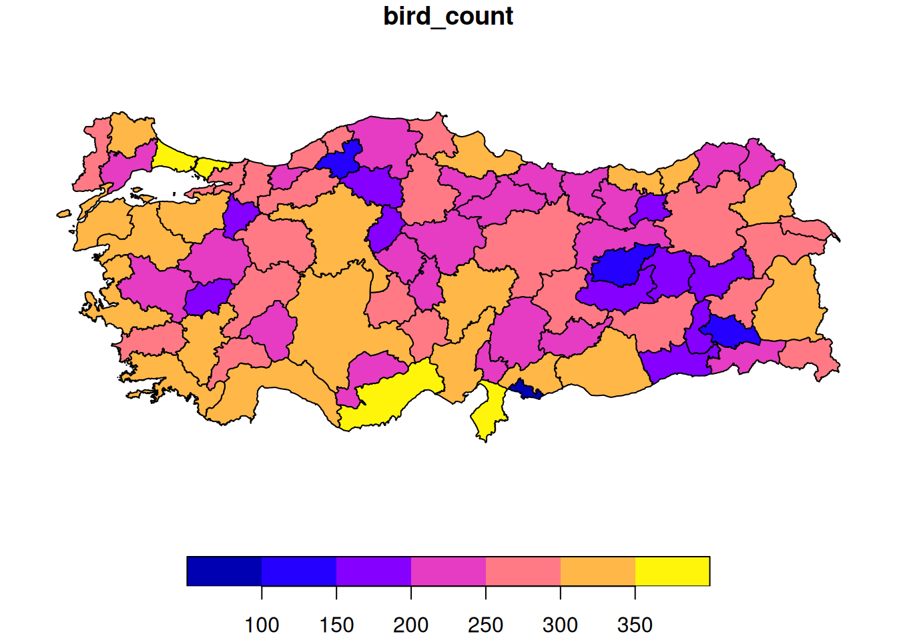

| Paket | Açıklama |
|---|---|
| tidyverse | Çoğunlukla veri manipülasyonu ve görselleştirme üzerine paketler içeren bir paket koleksiyonu |
| sf | Simple Features: Mekânsal vektör verileri işlemek için |
| rgeoboundaries | Mülki idare sınırlarını indirmek için |
R ve Kuşlar - eBird Verilerinin R ile Analizi I
R
gis
r-spatial
case_study
R ile Kuş Verilerinin Analizi

Merhabalar, blogun ilk yazısına hoş geldiniz. Temel bilgiler içeren yazılar da olacak ancak blog içeriklerinin çoğunun bu gibi vaka örneklerinden oluşacağını düşünüyorum. Takıldığınız ve anlamadığınız yerler olursa lütfen yorum yapmaya çekinmeyiniz. Ayrıca katkılarınızı ve eleştirilerinizi de bekliyorum. Keyifli okumalar.
Lisansa başladığım yıllarda arazi çalışmaları için can atan, lablardan ve her türlü veri işinden kaçan biriydim. Doğayı gözlemlemeyi; kuş ve memeli arazilerine gitmeyi çok seviyor, bu konularda yapacağım bilimsel çalışmaları düşlüyordum. Ancak korkunun ecele faydası yokmuş. Doğadaki gözlemlerimizden anlamlı bilgiler çıkartmanın yolu veriden geçiyormuş. 😅 Veriyi, münasebetimiz arttıkça sevmeye başladım. Ama öyle zorunluluktan sevmek falan değil. İçine girdikçe ne kadar haz veren bir uğraş olduğunu keşfettim. İstatistik ve veri analizi, rakamlardan ibaret değil, hayatın her yerinde. Onu sevelim, koruyalım. :) Neyse lafı fazla uzatmadan konuya döneyim.
Bu blog yazısında, R programlama dilini kullanarak kuş verilerinin nasıl işlendiğini göstereceğim. Yazının uzunluğu korkutmasın! Sadece azıcık bir ilgi ve temel R ile GIS bilgisi yeterli olacak. Kuşlara ilginiz olmasa bile, bu yazının bazı temel mekânsal analizleri öğrenmek için faydalı olacağını düşünüyorum. Takıldığınız her noktada çekinmeden yorum yapabilirsiniz.
Size iki ana soru sunuyorum:
- Türkiye’deki iller bazında kuş türü çeşitliliği nasıl bir dağılıma sahip?
- Bilindiği gibi Kızılcahamam, Türkiye’deki en önemli kara akbaba - Aegypius monachus popülasyonlarından birisini barındırıyor. Bu türün, Kızılcahamam ilçe sınırları içerisinde nasıl bir dağılımı vardır? Türün dağılımıyla çevresel faktörler arasındaki ilişki kabaca nasıldır?
Bu yazıda yalnızca birinci soruya odaklanacağız. İkinci soru için ikinci yazıyı bekleyiniz lütfen. :)
Yazının Akışı
Yazının genel akışı aşağıdaki gibidir:
- Gerekli paketlerin yüklenmesi
- Kuş verisinin yüklenip bu yazı için gerekli olan alt kümesinin alınması
- Kuş verisinin mekânsallıştırılması
- TR il katmanının yüklenmesi
- Kuş verisinin gruplanıp özetlenmesi
- Her bir il sınırı içinde kalan tür sayısının hesaplanması
- Verinin görselleştirilmesi
1. Gerekli paketlerin yüklenmesi
Eğer bu paketler kurulu değilse aşağıdaki kod bloğu ile kurabilirsiniz. Bu kod bloğu, paketi R’a yüklemeye çalışacak, eğer yükleyemezse kuracaktır. Eğer kurulumda sıkıntı yaşarsanız paketlerin dökümantasyonuna bakabilirsiniz.
if (!require("tidyverse")) install.packages("tidyverse")
if (!require("sf")) install.packages("sf")
if (!require("rgeoboundaries")) install.packages("rgeoboundaries")Eğer paketler kuruluysa, bu paketleri library() fonksiyonu ile yükleyebiliriz.
library(tidyverse) # bircok veri isini kolaylastirmak icin
library(sf) # r'da mekansal vektor verileri islemek icin
library(rgeoboundaries) # tr il sinirlarina erismek icin2. Kuş verisinin yüklenip bu yazı için gerekli olan alt kümesinin alınması
Yazımızdaki ilk soruya cevap verebilmek için iki temel veriye ihtiyacımız var. Bunlar kuş ve Türkiye’nin il sınırları verileri.
Kuş verisini eBird veri tabanından alacağız. eBird, Türkiye ve dünyadaki en kapsamlı kuş gözlem veri tabanı. Kuş gözlemcileri araziye çıktıklarında gözlemledikleri kuşları bu veri tabanına kaydediyor, bu şekilde bilime ve doğa korumaya katkı sağlayabiliyorlar.
eBird verilerini siteye üye olduktan sonra, en altta, Bilim başlığı altındaki Veri indirme talebi sayfasından ya da {rebird} paketini kullanarak indirebilirsiniz. Ben, site üzerinden tüm Türkiye verilerini indirdim.
İlk adım olarak indirdiğimiz eBird verisini R’a yükleyelim. Bu veri txt formatında olduğu için, {tidyverse} paket grubuna ait read_delim() fonksiyonunu kullandık. Base R’daki read.table() fonksiyonu da bu iş için kullanılabilir. Veri biraz büyük olduğundan yüklenmesi ve işlenmesi biraz zaman alabilir.
ebird <- read_delim("./ebird/ebd_TR_relApr-2023.txt")print(ebird)# A tibble: 2,403,720 × 50
`GLOBAL UNIQUE IDENTIFIER` `LAST EDITED DATE` `TAXONOMIC ORDER` CATEGORY
<chr> <dttm> <dbl> <chr>
1 URN:CornellLabOfOrnithology:E… 2021-04-15 12:59:44 10043 species
2 URN:CornellLabOfOrnithology:E… 2021-04-15 12:58:56 5625 species
3 URN:CornellLabOfOrnithology:E… 2021-04-15 13:04:32 1361 species
4 URN:CornellLabOfOrnithology:E… 2021-04-14 00:03:13 22215 species
5 URN:CornellLabOfOrnithology:E… 2021-04-05 11:01:32 5787 species
6 URN:CornellLabOfOrnithology:E… 2021-04-21 02:26:13 29239 species
7 URN:CornellLabOfOrnithology:E… 2021-04-14 00:03:35 22156 species
8 URN:CornellLabOfOrnithology:E… 2021-04-05 11:01:32 291 species
9 URN:CornellLabOfOrnithology:E… 2018-09-20 02:46:53 5945 species
10 URN:CornellLabOfOrnithology:E… 2018-09-20 02:46:53 5945 species
# ℹ 2,403,710 more rows
# ℹ 46 more variables: `TAXON CONCEPT ID` <chr>, `COMMON NAME` <chr>,
# `SCIENTIFIC NAME` <chr>, `SUBSPECIES COMMON NAME` <chr>,
# `SUBSPECIES SCIENTIFIC NAME` <chr>, `EXOTIC CODE` <chr>,
# `OBSERVATION COUNT` <chr>, `BREEDING CODE` <chr>,
# `BREEDING CATEGORY` <chr>, `BEHAVIOR CODE` <chr>, `AGE/SEX` <chr>,
# COUNTRY <chr>, `COUNTRY CODE` <chr>, STATE <chr>, `STATE CODE` <chr>, …Verimizi R’a yükledikten sonra print() fonksiyonu ile veri setimizin temel yapısına bir göz attık. 2,403,720 gözlem (satır) ve 50 değişkene (sütun) sahip bir tibble karşımıza çıktı. tibble, {tidyverse}’e özel klasik data.frame’den daha kullanışlı bir veri yapısıdır. Özel bir data.frame diyebiliriz. Ancak bu kadar fazla değişkenimiz varken print() fonksiyonu yeterince işlevsel değil. Verinin büyük bir kısmını göremiyoruz. Bu sebeple, R’a yüklediğimiz veri tablosunun tüm sütunlarını ve onların yapılarını görmek için glimpse() fonksiyonunu kullanacağız. Bu fonksiyon, base R’daki str() fonksiyonuna benziyor ancak tibble veri yapısıyla kullanılırken daha sade ve kullanışlı. Özetle, bu fonksiyonu, print() fonksiyonunun transpoze edilmiş hâli olarak görebilirsiniz.
glimpse(ebird)Rows: 2,403,720
Columns: 50
$ `GLOBAL UNIQUE IDENTIFIER` <chr> "URN:CornellLabOfOrnithology:EBIRD:OBS112…
$ `LAST EDITED DATE` <dttm> 2021-04-15 12:59:44, 2021-04-15 12:58:56…
$ `TAXONOMIC ORDER` <dbl> 10043, 5625, 1361, 22215, 5787, 29239, 22…
$ CATEGORY <chr> "species", "species", "species", "species…
$ `TAXON CONCEPT ID` <chr> "avibase-4F404CB9", "avibase-77845DAD", "…
$ `COMMON NAME` <chr> "Indian Roller", "Siberian Crane", "Black…
$ `SCIENTIFIC NAME` <chr> "Coracias benghalensis", "Leucogeranus le…
$ `SUBSPECIES COMMON NAME` <chr> NA, NA, NA, NA, NA, NA, NA, NA, NA, NA, N…
$ `SUBSPECIES SCIENTIFIC NAME` <chr> NA, NA, NA, NA, NA, NA, NA, NA, NA, NA, N…
$ `EXOTIC CODE` <chr> NA, NA, NA, NA, NA, NA, NA, NA, NA, NA, N…
$ `OBSERVATION COUNT` <chr> "1", "X", "X", "1", "2", "1", "1", "1", "…
$ `BREEDING CODE` <chr> NA, NA, NA, NA, NA, NA, NA, NA, NA, NA, N…
$ `BREEDING CATEGORY` <chr> NA, NA, NA, NA, NA, NA, NA, NA, NA, NA, N…
$ `BEHAVIOR CODE` <chr> NA, NA, NA, NA, NA, NA, NA, NA, NA, NA, N…
$ `AGE/SEX` <chr> NA, NA, NA, NA, NA, NA, NA, NA, NA, NA, N…
$ COUNTRY <chr> "Türkiye", "Türkiye", "Türkiye", "Türkiye…
$ `COUNTRY CODE` <chr> "TR", "TR", "TR", "TR", "TR", "TR", "TR",…
$ STATE <chr> "Kocaeli", "Ankara", "İstanbul", "İstanbu…
$ `STATE CODE` <chr> "TR-41", "TR-06", "TR-34", "TR-34", "TR-3…
$ COUNTY <lgl> NA, NA, NA, NA, NA, NA, NA, NA, NA, NA, N…
$ `COUNTY CODE` <lgl> NA, NA, NA, NA, NA, NA, NA, NA, NA, NA, N…
$ `IBA CODE` <lgl> NA, NA, NA, NA, NA, NA, NA, NA, NA, NA, N…
$ `BCR CODE` <lgl> NA, NA, NA, NA, NA, NA, NA, NA, NA, NA, N…
$ `USFWS CODE` <lgl> NA, NA, NA, NA, NA, NA, NA, NA, NA, NA, N…
$ `ATLAS BLOCK` <lgl> NA, NA, NA, NA, NA, NA, NA, NA, NA, NA, N…
$ LOCALITY <chr> "Haydarpasa-Izmit Yolu", "Ankara", "Istan…
$ `LOCALITY ID` <chr> "L14466142", "L14465903", "L14465858", "L…
$ `LOCALITY TYPE` <chr> "P", "P", "P", "H", "H", "H", "P", "H", "…
$ LATITUDE <dbl> 40.78331, 39.92951, 41.00805, 40.99209, 3…
$ LONGITUDE <dbl> 29.47437, 32.85443, 28.97673, 28.83948, 3…
$ `OBSERVATION DATE` <date> 1875-06-01, 1879-04-01, 1890-12-01, 1896…
$ `TIME OBSERVATIONS STARTED` <time> NA, NA, NA, NA, …
$ `OBSERVER ID` <chr> "obsr1979154", "obsr1979154", "obsr197915…
$ `SAMPLING EVENT IDENTIFIER` <chr> "S85596027", "S85594679", "S85597213", "S…
$ `PROTOCOL TYPE` <chr> "Historical", "Historical", "Historical",…
$ `PROTOCOL CODE` <chr> "P62", "P62", "P62", "P62", "P62", "P62",…
$ `PROJECT CODE` <chr> "EBIRD", "EBIRD", "EBIRD", "EBIRD", "EBIR…
$ `DURATION MINUTES` <dbl> NA, NA, NA, NA, NA, NA, NA, NA, NA, NA, N…
$ `EFFORT DISTANCE KM` <dbl> NA, NA, NA, NA, NA, NA, NA, NA, NA, NA, N…
$ `EFFORT AREA HA` <dbl> NA, NA, NA, NA, NA, NA, NA, NA, NA, NA, N…
$ `NUMBER OBSERVERS` <dbl> NA, NA, NA, NA, NA, NA, NA, NA, 1, 1, 1, …
$ `ALL SPECIES REPORTED` <dbl> 0, 0, 0, 0, 0, 0, 0, 0, 0, 0, 0, 0, 0, 0,…
$ `GROUP IDENTIFIER` <chr> NA, NA, NA, NA, NA, NA, NA, NA, NA, NA, N…
$ `HAS MEDIA` <dbl> 0, 0, 0, 0, 0, 0, 0, 0, 0, 0, 0, 0, 0, 0,…
$ APPROVED <dbl> 1, 1, 1, 1, 1, 1, 1, 1, 1, 1, 1, 1, 1, 1,…
$ REVIEWED <dbl> 1, 1, 1, 1, 1, 1, 1, 1, 1, 1, 1, 1, 1, 1,…
$ REASON <lgl> NA, NA, NA, NA, NA, NA, NA, NA, NA, NA, N…
$ `TRIP COMMENTS` <chr> NA, NA, NA, NA, NA, NA, NA, NA, NA, NA, N…
$ `SPECIES COMMENTS` <chr> "Collected (Sclator & Taylor, 1876)., Kir…
$ ...50 <lgl> NA, NA, NA, NA, NA, NA, NA, NA, NA, NA, N…Bu fonksiyon sayesinde sütunları çok daha rahat bir şekilde görebiliyoruz. Gördüğünüz gibi bu yazı için işimize yaramayacak olan bir sürü sütun var. Kalabalıkta kaybolmamak için yalnızca işimize yarayabilecek sütunları seçelim. Ardından da sadece tür kaydı olan gözlemleri seçmek için species’e göre filtreleyelim.
ebird_subset <- ebird |>
select(4, 6, 7, 11, 12, 18, 29, 30) |> # burada indeks kullanarak sectik, sutun isimleriyle de secebiliriz
filter(CATEGORY == "species")
ebird_subset# A tibble: 2,298,920 × 8
CATEGORY `COMMON NAME` `SCIENTIFIC NAME` `OBSERVATION COUNT` `BREEDING CODE`
<chr> <chr> <chr> <chr> <chr>
1 species Indian Roller Coracias benghal… 1 <NA>
2 species Siberian Crane Leucogeranus leu… X <NA>
3 species Black Grouse Lyrurus tetrix X <NA>
4 species White-winged … Alauda leucoptera 1 <NA>
5 species White-tailed … Vanellus leucurus 2 <NA>
6 species Mourning Whea… Oenanthe lugens 1 <NA>
7 species Black Lark Melanocorypha ye… 1 <NA>
8 species Brant Branta bernicla 1 <NA>
9 species Slender-bille… Numenius tenuiro… 2 <NA>
10 species Slender-bille… Numenius tenuiro… 1 <NA>
# ℹ 2,298,910 more rows
# ℹ 3 more variables: STATE <chr>, LATITUDE <dbl>, LONGITUDE <dbl>glimpse(ebird_subset)Rows: 2,298,920
Columns: 8
$ CATEGORY <chr> "species", "species", "species", "species", "speci…
$ `COMMON NAME` <chr> "Indian Roller", "Siberian Crane", "Black Grouse",…
$ `SCIENTIFIC NAME` <chr> "Coracias benghalensis", "Leucogeranus leucogeranu…
$ `OBSERVATION COUNT` <chr> "1", "X", "X", "1", "2", "1", "1", "1", "2", "1", …
$ `BREEDING CODE` <chr> NA, NA, NA, NA, NA, NA, NA, NA, NA, NA, NA, NA, NA…
$ STATE <chr> "Kocaeli", "Ankara", "İstanbul", "İstanbul", "Hata…
$ LATITUDE <dbl> 40.78331, 39.92951, 41.00805, 40.99209, 36.35517, …
$ LONGITUDE <dbl> 29.47437, 32.85443, 28.97673, 28.83948, 36.31517, …Gördüğünüz gibi verinin işimize yarayacak bir alt kümesini aldık, kalabalıktan kurtulduk.
Artık ilk yüklediğimiz veriyi (ebird) R’dan silebiliriz. Veri, tüm TR’yi kapsadığı için 2 milyondan fazla gözlem içeriyor. Büyük veri setleri RAM’in şişmesine ve R’ın çökmesine sebep olabilir. Bu sebeple artık işimize yaramayacak olan verileri environment’ten kaldıralım.
rm(ebird)3. Kuş verisinin mekânsallıştırılması
Kuş verisinin ihtiyacımız olan alt kümesini aldıktan sonra sıra geldi verimizi mekânsallaştırmaya. Verimizi, uygun mekânsal veri tipine dönüştürüp, mekânsal analizlerde kullanılabilecek bir hâle getireceğiz. Bunun için, R’da mekânsal vektör verileri işlemek için geliştirilen {sf} paketini kullanacağız.
Lat long verisini ve koordinat sistemini tanımlayarak eBird verisini sf objesine dönüştürelim.
ebird_sf <- st_as_sf(
ebird_subset, coords = c("LONGITUDE", "LATITUDE"), crs = "EPSG:4326"
)
ebird_sfSimple feature collection with 2298920 features and 6 fields
Geometry type: POINT
Dimension: XY
Bounding box: xmin: 25.78258 ymin: 34.58944 xmax: 44.78608 ymax: 42.93267
Geodetic CRS: WGS 84
# A tibble: 2,298,920 × 7
CATEGORY `COMMON NAME` `SCIENTIFIC NAME` `OBSERVATION COUNT` `BREEDING CODE`
* <chr> <chr> <chr> <chr> <chr>
1 species Indian Roller Coracias benghal… 1 <NA>
2 species Siberian Crane Leucogeranus leu… X <NA>
3 species Black Grouse Lyrurus tetrix X <NA>
4 species White-winged … Alauda leucoptera 1 <NA>
5 species White-tailed … Vanellus leucurus 2 <NA>
6 species Mourning Whea… Oenanthe lugens 1 <NA>
7 species Black Lark Melanocorypha ye… 1 <NA>
8 species Brant Branta bernicla 1 <NA>
9 species Slender-bille… Numenius tenuiro… 2 <NA>
10 species Slender-bille… Numenius tenuiro… 1 <NA>
# ℹ 2,298,910 more rows
# ℹ 2 more variables: STATE <chr>, geometry <POINT [°]>Verimizi sf formatına dönüştürdüğümüzde, bazı önemli mekânsal özelliklerin eklenmiş olduğunu görüyoruz. Bunlar arasında geometri tipi (POINT), veri boyutu (dimension), verinin coğrafi sınırlarını tanımlayan bounding box koordinatları ve koordinat referans sistemi (CRS) bulunuyor. Bundan sonra mekânsal analizleri rahatça yapabiliriz.
Dikkat ederseniz verinin her bir satırı, bir koordinat çiftiyle ilişkili. Bu, her bir satırın ve bu satırdaki tüm bilgilerin, bir geometriyle ilişkili olduğunu gösteriyor. Bu geometri de, geometri tipinde belirtildiği ya da bir koordinat çiftinin varlığından anlayabileceğimiz gibi nokta. Yani 2,298,920 tane noktamız var ve her bir nokta bir gözlemle ilişkili.
4. TR il katmanının yüklenmesi
eBird verisini mekânsallaştırdığımıza göre sıra geldi TR il sınırlarını R’a yüklemeye. Ben geoBoundaries veri tabanını kullanıyorum. İhtiyaç duyduğunuz mülki idare sınırları verisinine erişmek için bu linki ya da {rgeoboundaries} paketini kullanabilirsiniz.
tr_il <- gb_adm1(country = "Turkey", type = "SSCGS") # type = "SSCGS" argumaniyla basitlestirilmiş versiyonunu indiriyoruz
tr_ilSimple feature collection with 81 features and 6 fields
Geometry type: MULTIPOLYGON
Dimension: XY
Bounding box: xmin: 25.66545 ymin: 35.80768 xmax: 44.81766 ymax: 42.1048
Geodetic CRS: WGS 84
First 10 features:
shapeGroup shapeType shapeName shapeISO shapeID
1 TUR ADM1 Adana TR-01 25984515B95172477822815
2 TUR ADM1 Adıyaman TR-02 25984515B90872828599679
3 TUR ADM1 Afyonkarahisar TR-03 25984515B26209284550223
4 TUR ADM1 Ağrı TR-04 25984515B39003465173278
5 TUR ADM1 Amasya TR-05 25984515B32583172380009
6 TUR ADM1 Antalya TR-07 25984515B97476213604692
7 TUR ADM1 Artvin TR-08 25984515B1602304411378
8 TUR ADM1 Aydın TR-09 25984515B63739470532168
9 TUR ADM1 Balıkesir TR-10 25984515B55384476443375
10 TUR ADM1 Ankara TR-06 25984515B47806653651907
shapeCanonical geometry
1 province MULTIPOLYGON (((34.91146 36...
2 province MULTIPOLYGON (((37.861 37.4...
3 province MULTIPOLYGON (((30.48061 38...
4 province MULTIPOLYGON (((43.77542 39...
5 province MULTIPOLYGON (((36.3878 40....
6 province MULTIPOLYGON (((30.40305 36...
7 province MULTIPOLYGON (((41.87016 40...
8 province MULTIPOLYGON (((27.33197 37...
9 province MULTIPOLYGON (((26.7224 39....
10 province MULTIPOLYGON (((31.96673 38...Base R plot() fonksiyonu ile tr_il objemizi çizelim.
plot(tr_il)
Gördüğünüz gibi sf objesi için plot() fonksiyonu, tüm değişkenleri (sütunları) çiziyor. Sadece shapeName değişkenini seçip, eksenleri ve başlığı ekleyerek daha iyi bir Türkiye il sınırları haritası çizelim.
plot(tr_il[, "shapeName"], graticule = TRUE, axes = TRUE, main = "Türkiye Haritası")
Hop! Çok daha iyi!
Artık kuş verimizin Türkiye üzerindeki dağılımını incelemeye başlama vakti geldi. Ancak 2 milyondan fazla satırı olan bir verinin grafiğini çizmek muhtemelen R’ın çökmesiyle sonuçlanacaktır. Bu yüzden bu verinin bir alt kümesini alalım.
ebird_sample <- sample_n(ebird_sf, 500000)Veri tablomuzdan rastgele 500000 satır seçtik. Bu sayı bilgisayarınız için fazla geliyorsa 5-10b de seçebilirsiniz.
Verimizi, bu sefer de R’ın vazgeçilmez paketi olan {ggplot2} ile görselleştirelim. ggplot2, çizeceğimiz verileri katman katman belirtip + ile birbirine bağlamamıza izin veren oldukça esnek bir paket. Şimdi haritamızı çizelim.
ggplot() + # grafigi baslatiyor
geom_sf(data = tr_il, aes()) + # tr katmanini ekliyoruz
geom_sf(data = ebird_sample, aes(), size = .5) # kus verimizi ekliyoruz500000 kuş gözlem verisinin Türkiye’deki dağılımı bu şekildeymiş. Bu grafiğe dayanarak, ülkenin batısında ve büyükşehirlerde daha çok gözlem olduğunu söyleyebiliriz. Bu genel dağılımı gördüğümüze göre merak ettiğim 2 türün dağılımına bakmak istiyorum. Veriyi tür ismine göre filtreleyip haritayı çiziyoruz.
Sakallı Akbaba
Sakallı akbaba - Gypaetus barbatus, sarp dağların insandan uzak köşelerinde; genellikle kanyonlar ve derin yarlarda yaşayan bir akbaba türü. Kendine has görünüşü ve diyetinin kemikten oluşması sebebiyle oldukça ilgi çekici bir tür. Nesli tehdit altındaki bu nadir türün Türkiye’deki dağılımına bir bakalım.
sakalli <- ebird_sf |>
filter(`SCIENTIFIC NAME` == "Gypaetus barbatus")ggplot() +
geom_sf(data = tr_il, aes()) +
geom_sf(data = sakalli, aes(), size = .7)
Gördüğünüz gibi sakallı akbabanın Türkiye’deki dağılımı Köroğlu Dağları, Aladağlar, Kaçkar Dağları, Akdağ gibi dağlık alanlarda yoğunlaşıyor.
Kızıl Akbaba
Kızıl akbaba - Gyps fulvus da dağları tercih eden ve kayalıklarda yuvalayan bir tür. Kızıl akbaba, sakallı akbaba kadar çekingen olmayan, genellikle koloni hâlinde yaşayan bir tür. Şimdi de kızıl akbabanın dağılımına bir bakalım. Acaba nerelerden kayıtlar gelmiş!
kizil <- ebird_sf |>
filter(`SCIENTIFIC NAME` == "Gyps fulvus")ggplot() +
geom_sf(data = tr_il, aes()) +
geom_sf(data = kizil, aes(), size = .7)
Kızıl akbaba dağılımının, üreme ve göç bölgelerinde yoğunlaşan bir örüntü sergilediğini görebiliyoruz.
5. Kuş verisinin gruplanıp özetlenmesi
Biraz oyalanmanın ardından tekrardan sorumuza odaklanabiliriz. Öncelikle Türkiye’deki kuş türlerini ve her türden kaç adet kayıt olduğunu görmek için kuş verisini tür ismine göre gruplayıp, kayıt sayısına göre özetleyelim. Bu işlem biraz uzun sürebilir.
ebird_grouped <- ebird_sf |>
group_by(`SCIENTIFIC NAME`) |>
summarise(n = n())
print(ebird_grouped)Simple feature collection with 503 features and 2 fields
Geometry type: GEOMETRY
Dimension: XY
Bounding box: xmin: 25.78258 ymin: 34.58944 xmax: 44.78608 ymax: 42.93267
Geodetic CRS: WGS 84
# A tibble: 503 × 3
`SCIENTIFIC NAME` n geometry
<chr> <int> <GEOMETRY [°]>
1 Acanthis flammea 1 POINT (32.87976 39.96636)
2 Accipiter badius 3 MULTIPOINT ((41.23051 37.10523), (39.85856 4…
3 Accipiter brevipes 2157 MULTIPOINT ((26.218 40.00467), (26.20626 40.…
4 Accipiter gentilis 1617 MULTIPOINT ((26.16617 39.819), (26.20626 40.…
5 Accipiter nisus 17281 MULTIPOINT ((26.01417 39.80894), (25.89106 4…
6 Acridotheres tristis 792 MULTIPOINT ((28.56435 41.1764), (28.61338 40…
7 Acrocephalus agricola 355 MULTIPOINT ((42.41 38.7), (42.42388 38.70286…
8 Acrocephalus arundinaceus 6899 MULTIPOINT ((25.89106 40.15504), (26.16617 3…
9 Acrocephalus dumetorum 25 MULTIPOINT ((35.95475 36.06548), (39.72347 4…
10 Acrocephalus griseldis 1 POINT (43.578 40.11865)
# ℹ 493 more rowsglimpse(ebird_grouped)Rows: 503
Columns: 3
$ `SCIENTIFIC NAME` <chr> "Acanthis flammea", "Accipiter badius", "Accipiter b…
$ n <int> 1, 3, 2157, 1617, 17281, 792, 355, 6899, 25, 1, 2164…
$ geometry <GEOMETRY [°]> POINT (32.87976 39.96636), MULTIPOINT ((41.…Gördüğünüz gibi eBird veri tabanında Türkiye’den kayıtlı 503 tür varmış. eBird’ün internet sitesinde ise 494 adet tür gösteriyor. Bu farklılığın sebebi nedir bilmiyorum doğrusu. Aklıma, kesin olmayan bazı kayıtların da olabileceği geliyor sadece. Bilenler açıklayabilirse süper olur.
6. Her bir il sınırı içinde kalan tür sayısının hesaplanması
Şimdi, Türkiye’deki her bir ilin sınırları içine düşen kuş gözlem noktalarını sayacağız. Yani her bir poligonun içindeki noktaları sayacağız. Bu da bize her bir ildeki toplam tür sayısını verecek. Öncelikle st_intersects() fonksiyonu ile her bir il ile kesişen noktaları belirliyoruz. Ardından lengths() fonksiyonu ile her bir ilde kaç adet nokta olduğunu hesaplıyoruz ve bunu, tr_il verisine yeni bir sütun olarak ekliyoruz. Temelde çok basit bir işlem ama başta anlamak zor olabiliyor.
tr_il$bird_count <- lengths(st_intersects(tr_il, ebird_grouped))7. Verinin görselleştirilmesi
Şimdi, hızlıca bir plotlayalım. Bunun için plot() fonksiyonunu kullacağız. tr_il içindeki bird_count sütununu seçelim.
plot(tr_il[, "bird_count"])
Haritamız hazır. Şimdi daha iyi bir görselleştirme için ggplot() fonksiyonunu kullanalım.
Öncelikle kırılımlarımızı belirleyelim ki haritamız daha güzel görünsün. Bunun için jenks optimizasyonunu kullanacağız.
breaks <- classInt::classIntervals(
tr_il$bird_count,
n = 7,
style = "jenks"
)ggplot() + # grafigi baslatiyor
geom_sf(
data = tr_il, # tr katmanini ekliyoruz
aes(fill = bird_count), # renkleri kus turu sayisina gore seciyoruz
colour = "grey12", # il sinirlarinin rengini belirliyoruz
linewidth = .1 # il sinirlarinin kalinligini belirliyoruz
) +
scale_fill_viridis_c(breaks = breaks$brks) + # haritamizi viridis paletiyle dolduruyoruz
guides( # lejant ozelliklerini seciyoruz
fill = guide_colorsteps(
barwidth = 20,
barheight = .5,
title.position = "right"
)
) +
labs( # etiketleri yaziyoruz
title = "İllere Göre Kuş Türü Sayısı",
x = "Boylam",
y = "Enlem"
) +
theme_bw() + # tema seciyoruz
theme( # temanın ozellliklerini berlirliyoruz
legend.position = "bottom",
plot.background = element_rect("white", colour = "white"),
text = element_text(family = "Ubuntu Mono"),
legend.title = element_blank()
)
Gördüğünüz gibi çok daha iyi bir görselleştirme oldu. Şu an elimizde, Türkiye’deki illere göre kuş türü sayısını gösteren bir harita bulunmakta. Ancak bu harita üzerinden yapacağımız yorumlarda dikkatli olmamız gereken birkaç önemli nokta var. İl yüzölçümünün ve illere göre gözlem sayısının farklı olmasından kaynaklanan yanlılık (bias) potansiyeli. Bu harita genel fikirler verebilir ancak net çıkarımlar için verinin standartlaştırılması ve istatistiki testlere tabi tutulması önem arz etmektedir.
İkinci yazıda görüşmek dileğiyle.
Bilimle ve huzurla kalınız.